한줄 요약 — HEAP는 31자유도 보행 굴착기에 세 가지 팔 구동 방식, IMU/GNSS 기반 상태추정, 능동 차체 균형과 계층형 팔 제어를 통합한 공통 연구 플랫폼으로, 굴착·석벽·임업·위험물 원격작업을 실차에서 입증했으나 표준 유압기의 비선형성과 바퀴 슬립, 고성능 서보밸브 비용은 상용 확산의 핵심 장벽이다.
1.연구 배경 및 동기
상용 보행 굴착기를 범용 자율 건설로봇으로 바꾸는 시스템 문제
건설 현장의 자동화는 제조업처럼 고정된 셀 안에서 반복 동작을 재현하는 문제가 아니다. 이동로봇은 구조물보다 작은 작업공간을 이동하며 상태추정, 환경 인식, 계획, 유압 제어를 동시에 해결해야 하고, 현장은 비정형이며 계속 변한다. 저자들은 정밀도는 높지만 중량 대비 가반하중이 낮고 평탄 지형에 묶이는 산업용 로봇암 기반 플랫폼 대신, 네 개의 바퀴 달린 다리와 대형 팔을 이미 갖춘 상용 보행 굴착기를 출발점으로 택했다.
HEAP(Hydraulic Excavator for an Autonomous Purpose)의 목표는 단일 굴착 데모가 아니라 여러 건설·임업 임무가 공유할 수 있는 실차 기반을 만드는 것이다. 논문은 센서와 구동기 개조, 바퀴-다리 로봇 상태추정, 주행·차체·팔 제어기를 한 시스템으로 설명하고, 자유형 굴착·건식 석벽·산림 작업·반자율 원격조작에 같은 기반을 재사용한다. 즉 성과의 핵심은 특정 알고리즘의 단일 점수가 아니라 12톤 장비를 장기간 운용 가능한 이동 매니퓰레이터로 만든 통합 공학에 있다.
상용 굴착기의 유압계는 사람의 조이스틱 조작을 전제로 큰 밸브 오버랩과 데드밴드를 가지며, 관절 유격·온도에 따른 링크 길이 변화·오염된 오일·긴 호스의 압력 진동까지 정밀 로봇과 다른 오차원을 만든다. 그래서 논문은 최소 침습 조이스틱 액추에이터, 저비용 전기 파일럿 밸브, 고성능 서보밸브를 같은 기계에 구현해 용도별 절충을 드러낸다.
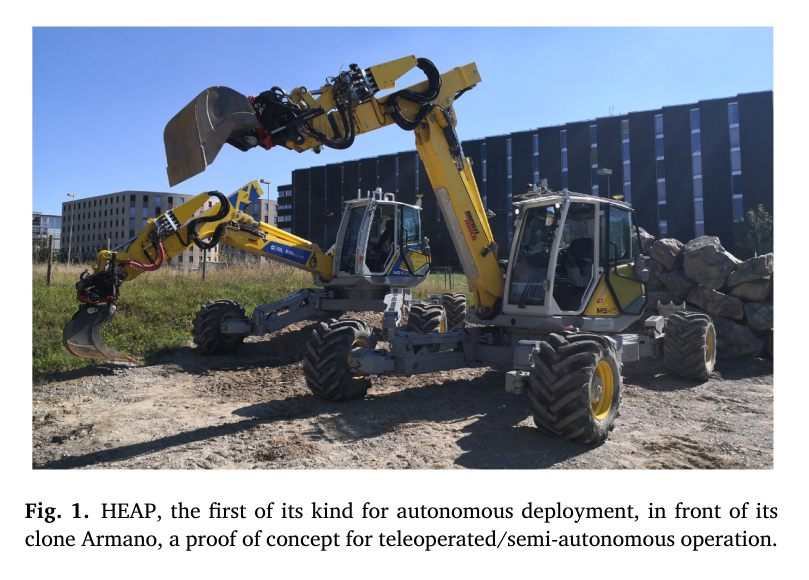
원문 Figure 1 · PDF p.2 — Fig. 1. HEAP, the first of its kind for autonomous deployment, in front of its clone Armano, a proof of concept for teleoperated/semi-autonomous operation.
선행 연구의 한계
스키드스티어 또는 궤도형 베이스와 산업용 로봇암 조합은 정밀하지만 중량 대비 가반하중이 낮고 거친 지형 이동성이 제한된다.
기존 대형 굴착기 자동화는 전기 파일럿 밸브나 조이스틱 구동에 의존해 큰 데드존과 느린 응답 때문에 고대역폭 힘 제어가 어렵다.
기존 바퀴-다리 로봇 상태추정은 IMU·LiDAR 중심이며, 네 바퀴의 구름과 다리 기구학을 GNSS 절대 위치와 함께 일반 잔차식으로 융합한 구성이 없었다.
보행 굴착기의 복잡한 31자유도를 하나의 임무 수준 체계로 묶어 다양한 실외 작업에서 반복 검증한 선행 플랫폼이 없었다.
이 연구의 기여
상용 Menzi Muck M545를 센싱·계산·유압 구동·안전 인터페이스가 통합된 12톤 자율 보행 굴착기 HEAP로 개조하고 구성 요소를 재현 가능하게 공개했다.
조이스틱 액추에이터, 전기 파일럿 스테이지, 직접 고압 서보밸브를 동일 팔에서 구현해 속도·힘 응답과 침습도·비용의 절충을 실험적으로 비교했다.
IMU 예측, GNSS-RTK 갱신, 바퀴 구름 예측, 다리 오도메트리를 잔차 기반 TSIF에 넣는 일반 바퀴-다리 상태추정 정식화를 제안하고 HEAP의 슬립 조건에서 배치 구성을 선별했다.
주행·능동 차체 균형·계층형 팔 제어 위에 굴착, 대형 석재 조립, 임업, 위험지역 원격작업을 올려 공통 플랫폼의 범용성을 실차로 보였다.
2.방법론 및 시스템 구성
시스템 계층은 100 Hz CAN 주기에 맞춰 저수준 센서 취득과 단일 액추에이터 제어가 상태추정기와 상위 제어기를 촉발하고, 시간 민감 노드는 공유메모리로, 시각화·원격 명령은 ROS로 연결된다. 두 GNSS 안테나의 RTK 위치, 캐빈·차체 IMU, 실린더 draw-wire encoder, 링크 IMU, 두 대의 Velodyne VLP-16이 위치·관절·환경 상태를 제공한다.
구동과 제어는 임무 특성에 따라 분리된다. 공중 팔 이동은 유량이 큰 기존 메인밸브 계통을 파일럿 또는 조이스틱으로 속도 제어하고, 지면 접촉과 정밀 힘 제어는 고압 서보밸브를 쓴다. 차체는 네 다리의 굽힘/폄 실린더 힘을 준정적 최적화와 가상모델 제어로 분배하며, 팔은 역동역학 또는 역기구학 계층 최적화로 운동방정식·펌프 유량·실린더 한계·자기충돌·말단 과제를 우선순위대로 만족한다.
처리 파이프라인
1
상용기 하드웨어 계측
Menzi Muck M545에 Leica iCON iXE3 이중 GNSS-RTK, 캐빈·차체 SBG Ellipse2-A IMU, 실린더 draw-wire encoder, 링크 IMU, 전방 지붕의 VLP-16 두 대를 설치해 6자유도 차체 자세와 팔 상태, 주변 점군을 수집한다.
2
세 가지 팔 액추에이션
ANYdrive 두 축으로 기존 조이스틱을 물리적으로 움직이는 최소 침습 방식, Hawe PMZ 파일럿 밸브가 기존 메인밸브를 여는 방식, 별도 정압 펌프·어큐뮬레이터가 Moog 계열 서보밸브를 공급하는 방식을 병렬 구현한다.
3
잔차 기반 상태추정
TSIF가 IMU 위치·속도·자세·바이어스를 예측하고 GNSS 센서 위치를 절대 갱신으로 사용한다. 선택적으로 지형 법선에 투영한 바퀴 구름 속도로 접촉점을 예측하고, 관절·실린더 측정에서 계산한 접촉점과 필터 접촉점을 맞춘다.
4
주행 및 차체 균형
주행기는 crab·전륜·후륜·4륜 Ackermann 모드를 계산하고 베이스 선속도 피드백으로 직렬 연결된 휠 유압계를 제어한다. 차체 제어기는 높이·roll·pitch 가상 힘/토크와 네 접촉력 분배를 최적화해 모든 바퀴의 접촉을 유지한다.
5
계층형 팔 제어
접촉 작업에서는 5개 힘 제어 관절에 대한 역동역학 최적화가 운동방정식부터 유량·힘·속도·위치·충돌 제약을 적용한다. 공중 작업에서는 7개 속도 제어 관절의 역기구학이 6자유도 말단 자세를 추종한다.
6
임무별 계획기 연결
공통 제어 입력 위에 자유형 굴착의 힘·덤프 위치, 석벽의 파지·배치 자세, 임업의 나무 접근 자세, 원격작업의 조작자 명령을 연결한다. 안전 운전자는 실험 중 개입하지 않고 비상 상황만 감독한다.
Bullet이 제공한 최근접점과 충돌 방향 n을 이용해 안전거리 안에서 링크의 접근 속도를 점차 제한한다.
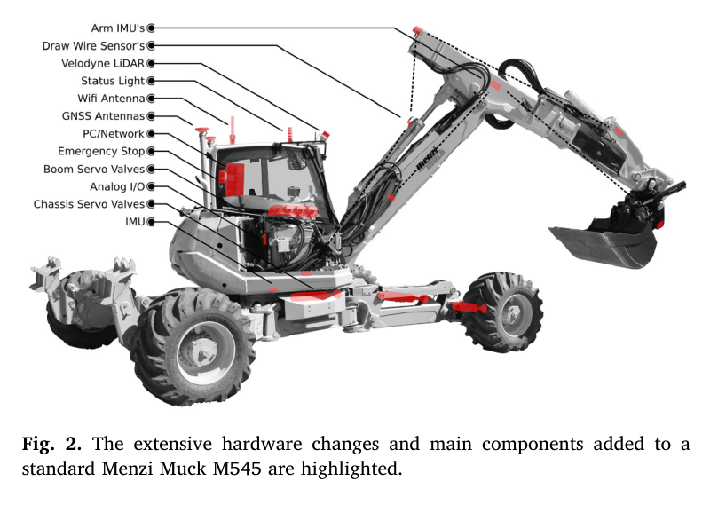
원문 Figure 2 · PDF p.3 — Fig. 2. The extensive hardware changes and main components added to a standard Menzi Muck M545 are highlighted.
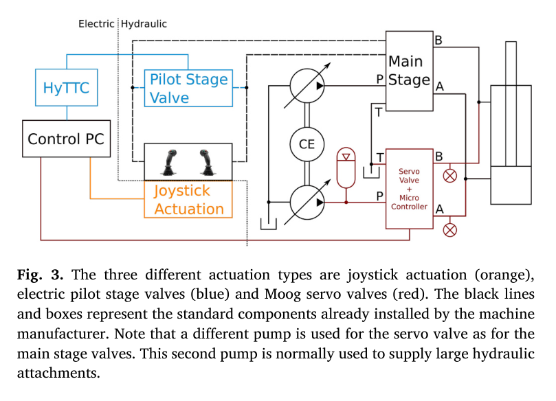
원문 Figure 3 · PDF p.4 — Fig. 3. The three different actuation types are joystick actuation (orange), electric pilot stage valves (blue) and Moog servo valves (red). The black lines and boxes represent the standard components already installed by the machine manufacturer. Note that a different pump is used for the servo valve as for the main stage valves. This second pump is normally used to supply large hydraulic attachments.
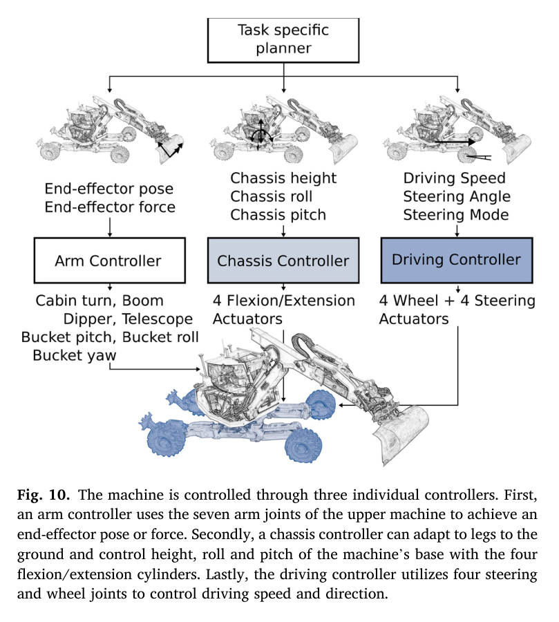
원문 Figure 10 · PDF p.9 — Fig. 10. The machine is controlled through three individual controllers. First, an arm controller uses the seven arm joints of the upper machine to achieve an end-effector pose or force. Secondly, a chassis controller can adapt to legs to the ground and control height, roll and pitch of the machine’s base with the four flexion/extension cylinders. Lastly, the driving controller utilizes four steering and wheel joints to control driving speed and direction.
3.핵심 기술
용도별 유압 구동 절충
서보밸브는 밸브 오버랩이 없고 1 kHz 내부 힘/압력 제어가 가능해 접촉 작업에 필요한 빠른 힘 응답을 제공한다. 반면 파일럿·조이스틱 방식은 기존 메인밸브의 데드존과 부하감지 압력 형성 지연을 그대로 받지만, 개조 비용과 침습도가 낮고 큰 유량으로 공중 이동 속도를 낼 수 있다.
서보밸브 속도 t90 35 ms, 힘 t90 40 ms
파일럿 속도 t90 680/850 ms, 힘 t90 650 ms
조이스틱 힘 t90 720 ms이며 운전석 수동 조작을 유지
바퀴-다리 TSIF와 배치 구성 선택
필터는 IMU·GNSS·구름·다리 기구학을 모듈식 잔차로 표현한다. 그러나 시뮬레이션에서 급선회와 가감속 때 바퀴 슬립이 무슬립 구름 가정을 깨뜨려 모든 잔차를 켠 구성이 악화됐다. 실제 HEAP에서는 휠 엔코더도 없고 허브 모터와 타이어가 더 쉽게 미끄러져 최종 배치는 IMU+GNSS만 사용했다.
구름·다리 잔차는 향후 슬립 검출 단서로 사용 가능
GNSS 손실 때 기구학 잔차를 재활성화하면 순수 IMU 드리프트 완화 가능
현재 구성은 GNSS 연결 신뢰도에 크게 의존
능동 차체와 분할 제어 구조
차체·주행·팔을 분리한 구조는 대형 유압기 특유의 이질적 액추에이터를 다루기 쉽다. 능동 차체는 준정적 모델로 네 접촉력을 분배하고 높이·roll·pitch를 유지해, 팔 운동 중 공기 타이어와 연약 지반이 만드는 흔들림과 전복 위험을 줄인다.
14개 차체 실린더를 ICM 내장형으로 교체
100% 경사·깊은 진흙·거친 지형에서 운용
모든 바퀴 접촉 유지가 무인 팔 작업의 안전 기반
계층 최적화 팔 제어
역동역학은 5개 힘 제어 관절로 4차원 말단 힘·운동을 만들고, 역기구학은 Rototilt를 포함한 7개 속도 제어 관절로 6자유도 자세를 만든다. 자기충돌이 말단 이동을 제한할 때도 버킷 방향 과제를 위치보다 높게 두어 토사 유출을 막는 식으로 임무별 우선순위를 조절한다.
운동방정식과 하드웨어 한계를 높은 우선순위로 강제
펌프·실린더·충돌 한계를 온라인 반영
접촉은 힘 제어, 공중 이동은 속도 제어로 역할 분담
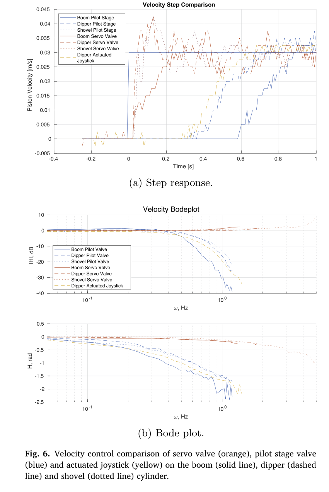
원문 Figure 6 · PDF p.6 — Fig. 6. Velocity control comparison of servo valve (orange), pilot stage valve (blue) and actuated joystick (yellow) on the boom (solid line), dipper (dashed line) and shovel (dotted line) cylinder.
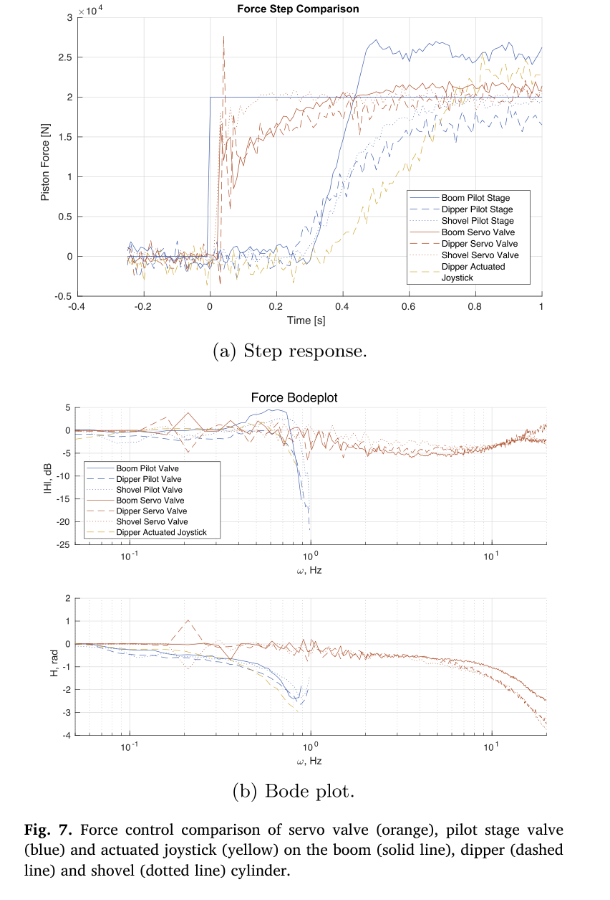
원문 Figure 7 · PDF p.6 — Fig. 7. Force control comparison of servo valve (orange), pilot stage valve (blue) and actuated joystick (yellow) on the boom (solid line), dipper (dashed line) and shovel (dotted line) cylinder.
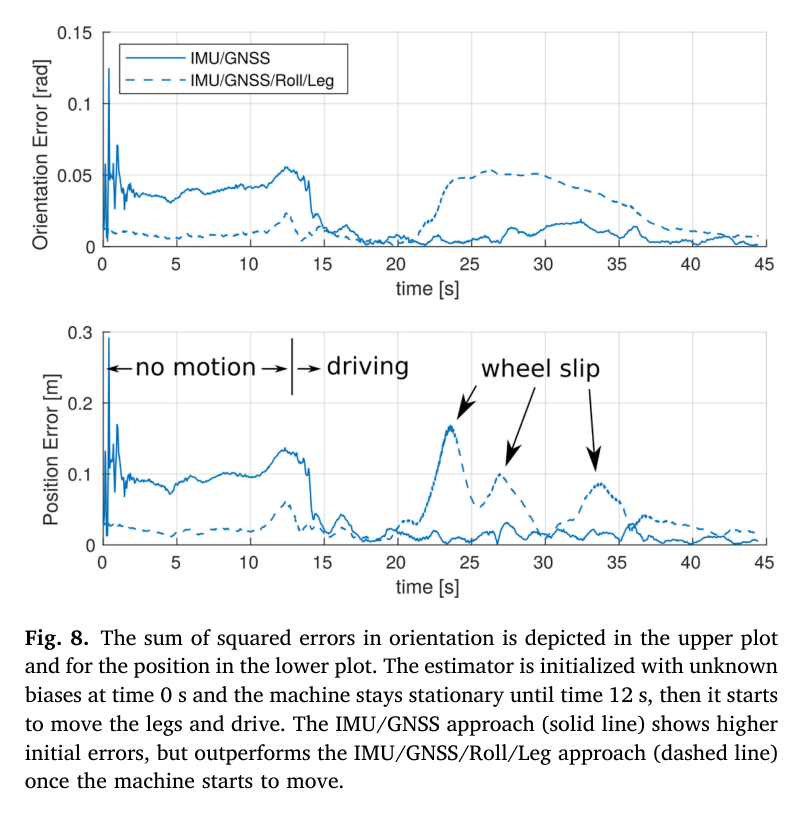
원문 Figure 8 · PDF p.8 — Fig. 8. The sum of squared errors in orientation is depicted in the upper plot and for the position in the lower plot. The estimator is initialized with unknown biases at time 0 s and the machine stays stationary until time 12 s, then it starts to move the legs and drive. The IMU/GNSS approach (solid line) shows higher initial errors, but outperforms the IMU/GNSS/Roll/Leg approach (dashed line) once the machine starts to move.
4.실험 결과
실험 환경·장비·데이터
12톤 Menzi Muck M545 기반 HEAP, 총 31자유도·네 바퀴 다리·7자유도 팔
Gazebo에서 IMU+GNSS+구름+다리 잔차와 IMU+GNSS 구성을 급선회·가감속 조건으로 비교한 뒤 실차 배치 구성을 결정했다.
공통 플랫폼 위에서 자유형 제방, 대형 석재벽, 산림 이동·파지, 탄약 포함 토양 원격 트렌치 작업을 수행했다.
비교 기준
팔 구동 비교: 고압 서보밸브 대 전기 파일럿 스테이지 대 조이스틱 액추에이터
상태추정 절제: IMU+GNSS 대 IMU+GNSS+Roll+Leg 잔차
응용 결과는 인간 운전자와의 정식 속도 비교가 아니라 각 임무의 완수·정밀도·시간으로 평가
평가 지표
속도·힘 step의 90% 상승시간 t90와 -3 dB cutoff
상태추정 위치·자세 제곱오차 합
제방 평균 높이 오차, 석재 배치 오차·소요시간
임업의 그리퍼·차체 위치 오차, 원격작업 거리와 영상 지연
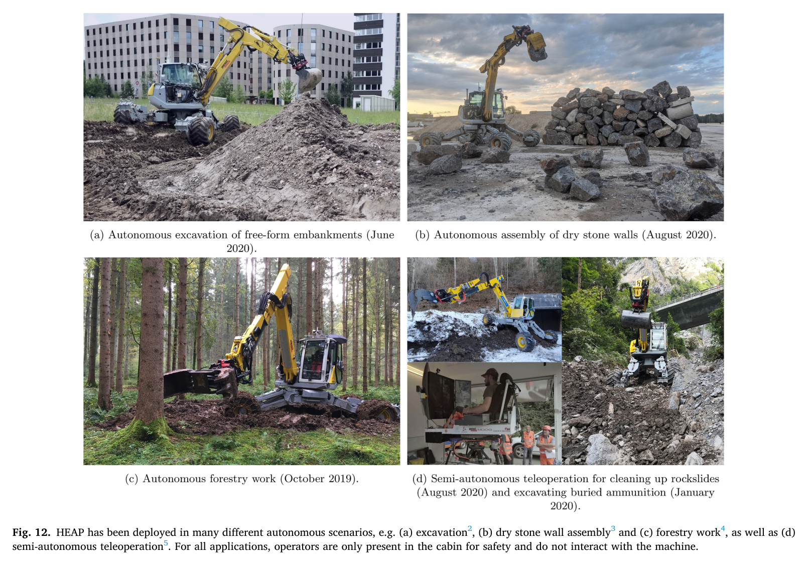
원문 Figure 12 · PDF p.11 — Fig. 12. HEAP has been deployed in many different autonomous scenarios, e.g. (a) excavation2, (b) dry stone wall assembly3 and (c) forestry work4, as well as (d) semi-autonomous teleoperation5. For all applications, operators are only present in the cabin for safety and do not interact with the machine.
핵심 결과 해석
서보밸브는 속도 step의 90%에 35 ms, 힘 step에 40 ms로 도달했고 힘 제어 cutoff는 측정 한계인 20 Hz보다 높았다. 파일럿과 조이스틱은 속도 응답이 약 0.6–0.85 s, 힘 응답이 0.65–0.72 s이고 cutoff가 1 Hz 아래였다. 이는 공중 이송에는 기존 계통의 큰 유량을 쓰되, 토양 접촉·정밀 조작은 서보밸브가 필요하다는 시스템 설계를 뒷받침한다.
응용 실험은 플랫폼 재사용성을 구체적으로 보였다. 두 얼굴 제방은 평균 0.03 m, S자 제방은 30 m³ 토사를 옮겨 평균 0.05 m 오차로 만들었다. 석벽에서는 131개 스캔 석재 중 109개로 4×10×2 m 벽을 만들고 평균 0.128 m 배치 오차를 기록했다. 산림에서는 100×30 m 구간의 여러 나무를 잡았으며, 위험물 원격작업에서는 100 ms 영상 지연으로 200 m 케이블 트렌치를 완성했다.
상태추정에서는 모든 기구학 잔차를 켠 구성이 급선회·가감속의 슬립 때문에 악화되어 IMU+GNSS 구성이 실차에 채택됐다. 이 결과는 제안한 일반 정식화가 항상 모든 잔차를 켜야 좋다는 뜻이 아니라, 접촉 가정의 유효성을 감시하며 모달리티를 선택해야 함을 보여준다.
정량 결과
평가 항목
정량 결과
조건·맥락
원문 근거
서보밸브 속도 응답
t90=35 ms, cutoff >2 Hz
0.03 m/s step 및 0.05–10 Hz chirp
PDF p.5
서보밸브 힘 응답
t90=40 ms, cutoff >20 Hz
20 kN step 및 0.05–20 Hz chirp
PDF p.6
파일럿/조이스틱 힘 응답
650 ms·0.85 Hz / 720 ms·0.73 Hz
지면 접촉 단일 액추에이터 힘 제어
PDF p.6
능동 차체 경사
최대 100% 경사, 실패 없음
수백 시간 자율·원격 운용에 사용된 차체 제어
PDF p.3
자유형 제방 정확도
0.03 m 및 0.05 m 평균 오차
두 얼굴 제방과 30 m³ S자 제방
PDF p.11
건식 석벽
109/131개, 4×10×2 m, 평균 배치오차 0.128 m
석재 평균 1030 kg, 범위 445–2425 kg
PDF p.11
석재 1개 배치시간
약 700 s, 뒤집기 포함 시 1300 s
자율 파지·배치 사이클
PDF p.11
산림 작업 오차
그리퍼 <0.30 m, 차체 <0.40 m
100×30 m 숲에서 나무까지 이동·파지, 약 3 min
PDF p.12
위험물 원격굴착
200 m 트렌치, 영상 지연 100 ms
1×4K+4×2.5K 영상으로 WWII 탄약 포함 토양 굴착
PDF p.12
실패 사례와 경계조건
구름·다리 잔차는 급선회와 가감속의 바퀴 슬립을 설명하지 못해 상태추정 오차를 키웠다.
노즐-플래퍼식 1세대 차체 밸브는 건설장비 오일 오염으로 offset이 생기고 14개 동시 구동의 파일럿 유량이 본 구동 출력을 낮췄다.
긴 유압호스, 유체 압축성, 고온의 호스 팽창이 압력 진동을 만들며 모델 기반 완전 보상은 시스템 복잡도로 비현실적이었다.
반복·통제된 작업과 달리 예상치 못한 사건이 계속 발생하는 임무에서는 인간 운전자의 추론과 경험을 아직 대체하지 못한다.
5.한계 및 향후 연구
현재 한계
실차 상태추정이 IMU+GNSS-RTK에 의존해 수신 차단·다중경로에서 절대 위치와 장기 안정성이 약해진다.
고정밀 힘 제어를 위한 고압 서보밸브와 14개 ICM 차체 실린더는 비싸고 기존 장비 retrofit 범위를 크게 만든다.
관절 유격, 온도 변화, 비선형 유압 결합, 긴 호스 압력 진동을 손조정 제어기가 완전히 모델링하지 않는다.
실험 동안 운전석 안전 감독자가 필요했고, 임무 계획기는 반복·정형 상황을 넘어선 예외 복구를 충분히 다루지 못한다.
향후 연구
시각 오도메트리나 외부 위치 단서를 TSIF 잔차로 추가해 GNSS 차단에 강한 상태추정을 만든다.
학습 기반 유압 제어로 파일럿 메인밸브의 비선형·데드존을 보상해 고가 서보밸브 의존과 개조비를 줄인다.
말단 힘-토크 센서를 추가해 대형 물체 접촉력과 미끄러짐을 정밀 측정한다.
차체와 팔을 하나의 전신제어기로 통합하고 바퀴·팔 접촉 일정을 수 초 안에 계획해 간극·단차를 넘는 동작으로 확장한다.
6.한마디로 정리
핵심 방법은?
상용 보행 굴착기의 이질적 센서·유압 구동을 100 Hz 소프트웨어 계층, TSIF 상태추정, 능동 차체, 계층형 팔 제어로 통합했다.
핵심 결과는?
서보밸브 40 ms 힘 응답과 실외 네 임무를 통해 12톤 플랫폼이 정밀 굴착부터 톤급 석재 조립까지 공유 기반으로 기능함을 보였다.
한계는?
GNSS 의존, 고가·대규모 retrofit, 유압 비선형과 예외 상황 대응, 안전 감독자 필요가 완전 무인·범용 보급을 제한한다.
#시스템통합·현장실증#측위·매핑#제어·MPC#다중센서 상태추정#전기유압 개조#계층형 제어 소프트웨어
나의 의견 / 우리 연구와의 연관성
자율굴착 연구 관점에서 HEAP는 계획·인지 알고리즘을 실차에 올리기 전에 반드시 필요한 하위 기반을 구체화한다. 특히 공중 이송과 지면 접촉에 서로 다른 밸브 경로를 쓰고, 차체 접촉을 먼저 안정화한 뒤 말단 힘을 제어하는 구조는 대형 유압기의 작업 정밀도를 좌우한다.
현장 적용에는 논문 그대로의 고가 서보 retrofit보다 센서·밸브 최소 구성을 찾는 연구가 중요하다. 제안 정식화는 GNSS·시각·레이더·관절 단서를 잔차로 선택적으로 켤 수 있어, 굴착 분진·진동·슬립 상황에 맞는 건강도 기반 센서 전환으로 확장할 수 있다.
굴착 접촉 단계에는 고대역폭 힘 제어, 공중 이송에는 큰 유량의 저비용 밸브를 배정하는 하이브리드 유압 아키텍처가 직접적인 설계 근거다.
능동 차체가 모든 바퀴 접촉을 유지하므로 버킷 힘 제어의 기준 좌표와 전복 여유가 안정된다.
구름·다리 잔차의 실패는 토질·경사에 따른 슬립 검출을 상태추정의 선행 조건으로 삼아야 함을 보여준다.
굴착·석재·임업 모듈의 공통 기반은 하나의 retrofit kit 위에 작업별 계획기만 교체하는 범용 필드로봇 구조로 연결된다.
7.전체 그림·표
본문 핵심 위치에 배치하지 않은 원문 Figure와 Table을 원문 페이지 순서로 수록한다.
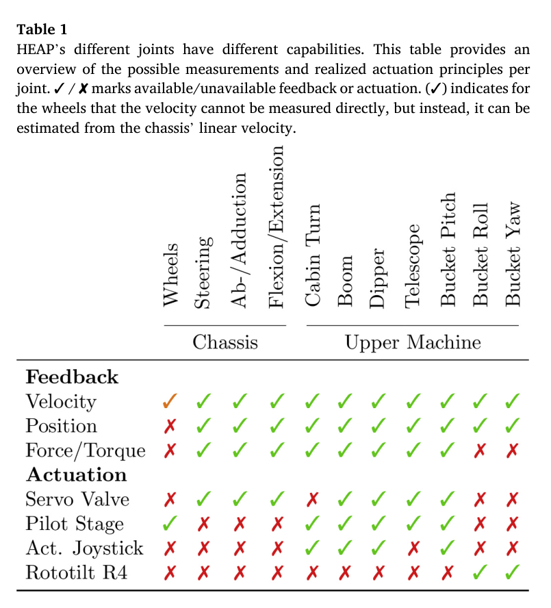
원문 Table 1 · PDF p.3 — Table 1 HEAP’s different joints have different capabilities. This table provides an overview of the possible measurements and realized actuation principles per joint. ✓ / ✘ marks available/unavailable feedback or actuation. (✓) indicates for the wheels that the velocity cannot be measured directly, but instead, it can be estimated from the chassis’ linear velocity.
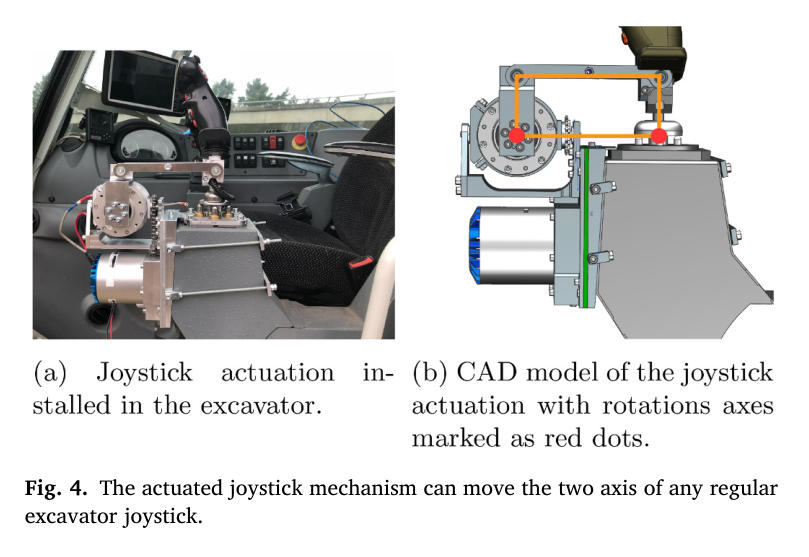
원문 Figure 4 · PDF p.4 — Fig. 4. The actuated joystick mechanism can move the two axis of any regular excavator joystick.
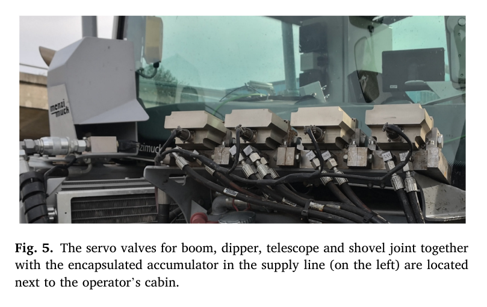
원문 Figure 5 · PDF p.5 — Fig. 5. The servo valves for boom, dipper, telescope and shovel joint together with the encapsulated accumulator in the supply line (on the left) are located next to the operator’s cabin.
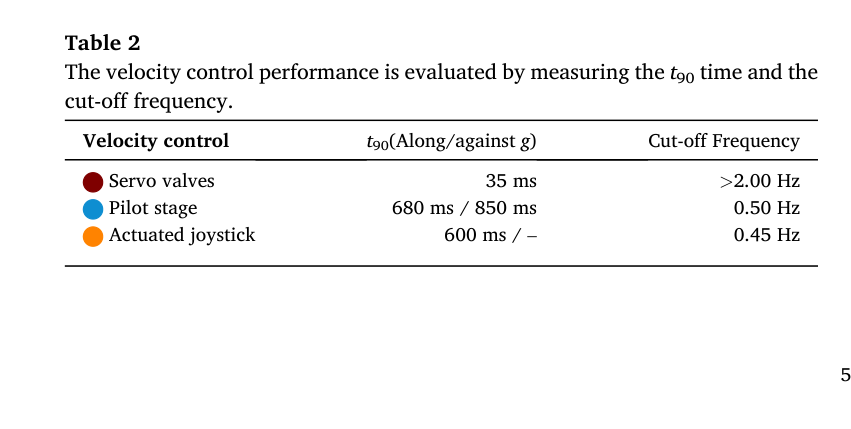
원문 Table 2 · PDF p.5 — Table 2 The velocity control performance is evaluated by measuring the t90 time and the cut-off frequency.
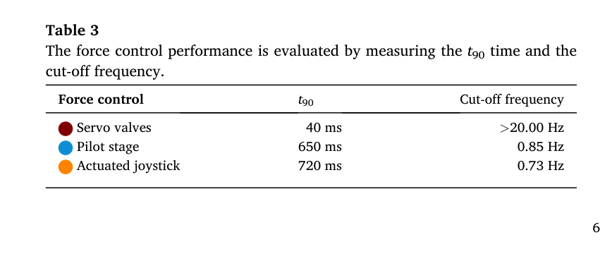
원문 Table 3 · PDF p.6 — Table 3 The force control performance is evaluated by measuring the t90 time and the cut-off frequency.
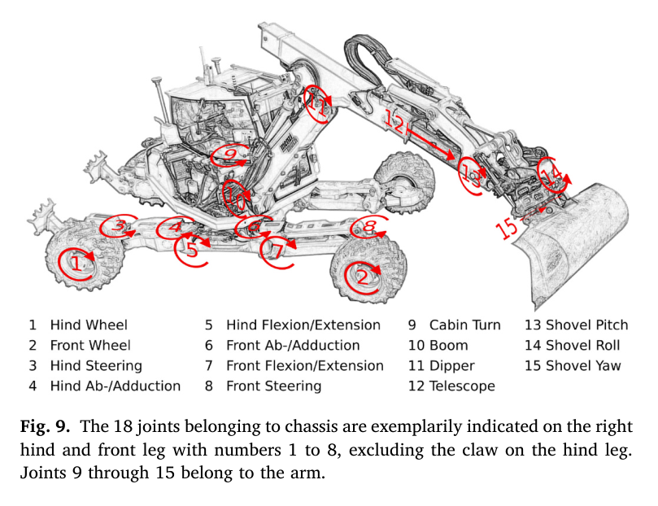
원문 Figure 9 · PDF p.8 — Fig. 9. The 18 joints belonging to chassis are exemplarily indicated on the right hind and front leg with numbers 1 to 8, excluding the claw on the hind leg. Joints 9 through 15 belong to the arm.
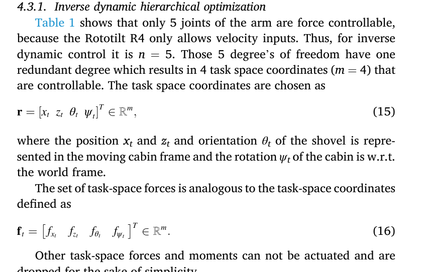
원문 Table 1 · PDF p.9 — Table 1 shows that only 5 joints of the arm are force controllable, because the Rototilt R4 only allows velocity inputs. Thus, for inverse dynamic control it is n = 5. Those 5 degree’s of freedom have one redundant degree which results in 4 task space coordinates (m = 4) that are controllable. The task space coordinates are chosen as
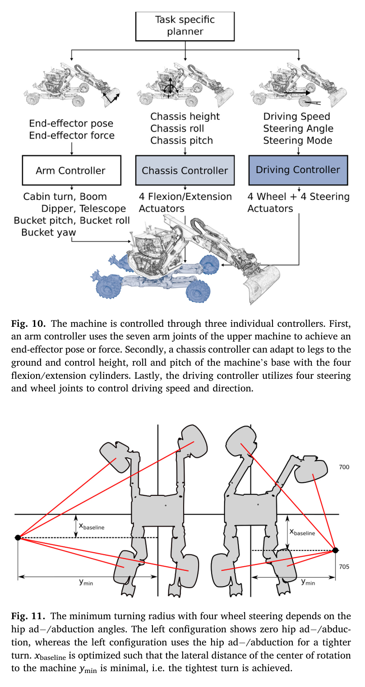
원문 Figure 11 · PDF p.9 — Fig. 11. The minimum turning radius with four wheel steering depends on the hip ad−/abduction angles. The left configuration shows zero hip ad−/abduc tion, whereas the left configuration uses the hip ad−/abduction for a tighter turn. xbaseline is optimized such that the lateral distance of the center of rotation to the machine ymin is minimal, i.e. the tightest turn is achieved.